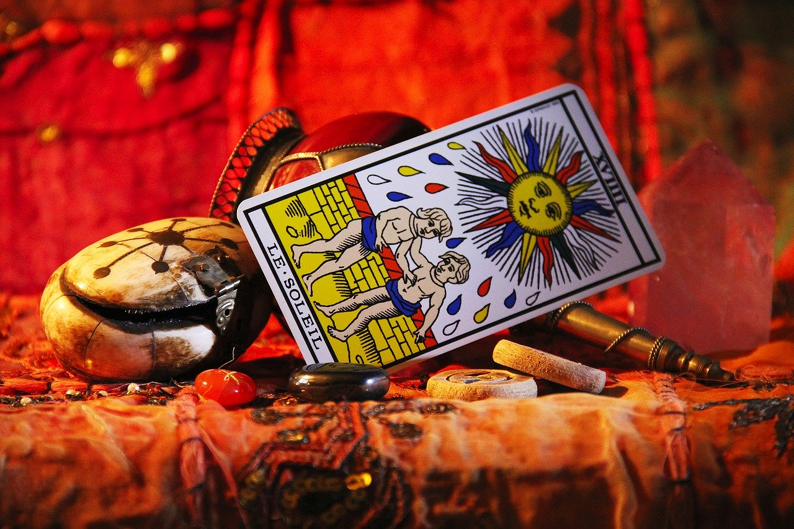

Habla con un tarotista ahora
ConsultarQUÉ ES EL TAROT


En este artículo vamos a hablar sobre qué es el tarot, cómo funciona y de qué forma te puede ayudar para crecer y evolucionar día tras día. Verás que va mucho más allá de adivinar el futuro.
¿QUÉ ES EL TAROT?

El tarot es una herramienta de crecimiento personal compuesta por 78 cartas: 22 arcanos mayores y 56 arcanos menores.
Todos ellos representan diferentes arquetipos de la vida y situaciones que vivimos todas las personas. Los mayores tienen un trasfondo más espiritual y los menores están más enfocados a lo terrenal (amor, trabajo, dinero, etc).
Aunque lo más extendido es su uso adivinatorio y predictivo, en realidad tiene muchos más enfoques, de los cuales hablamos en detalle en nuestro artículo sobre las formas de leer el tarot.
El tarot también tiene un enfoque oracular, es decir, que puedes acudir a él sin ninguna expectativa para que te transmita el mensaje o consejo que necesites más en esos momentos.
CÓMO SE COMPONE LA BARAJA DEL TAROT
Para entender qué es el tarot conviene conocer su estructura. La baraja se divide en dos grandes grupos que trabajan juntos en cada lectura:
Los 22 arcanos mayores: son las cartas más conocidas (El Loco, El Mago, La Sacerdotisa, La Rueda de la Fortuna, La Muerte, El Mundo…). Representan las grandes lecciones, etapas y fuerzas que marcan nuestro camino de vida. Cuando aparecen en una tirada, hablan de temas de fondo e importantes.
Los 56 arcanos menores: se organizan en cuatro palos, y cada uno se asocia a un elemento y a un área de la vida:
Copas (agua): emociones, amor y relaciones. Oros (tierra): dinero, trabajo y lo material. Espadas (aire): pensamientos, conflictos y decisiones. Bastos (fuego): energía, proyectos y pasión.
Si quieres profundizar en el mensaje de cada carta, puedes consultar el significado de todas las cartas del tarot una a una.
¿PARA QUÉ SIRVE EL TAROT?
El principal objetivo del tarot es ayudarnos en nuestro crecimiento personal y espiritual. Es una guía y orientación que proporciona mensajes y consejos para aplicar en nosotros mismos y así mejorar aquellas áreas de nuestra vida que no estén funcionando bien.
El tarot es una herramienta que tiene distintos usos y todos dependen del enfoque o intención que tenga la persona a la hora de usarlo.
A nivel general, se tiene el concepto de que el tarot sirve para ver el futuro y adivinar cosas y nada más. Pero esa visión es bastante errónea, ya que sería lo mismo que decir que una navaja suiza sólo sirve para cortar y abrir latas de conservas. Pues con el tarot pasa lo mismo, tiene variedad de usos y enfoques.
Existe el enfoque terapéutico, pero aviso que aunque se llame terapéutico no significa que cure enfermedades ni nada por el estilo. Si tienes una dolencia física ve al médico.
La explicación de este enfoque es que de nada te sirve preguntar si vas a tener una nueva pareja estable cuando acabas de romper con tu ex, la relación ha sido bastante tóxica y te ha dejado grandes heridas emocionales. Por lo que con este enfoque, los mensajes del tarot van enfocados para aplicarlos en el presente.
Es decir, si sanas tu situación actual aumentas las posibilidades de encontrar un nuevo amor mucho más sano y equilibrado que el de tu relación anterior. Sin embargo, cuando la gente solo quiere escuchar un sí o un no, solo para calmar su miedo a la soledad, está cometiendo un grave error. Ya que si no se sanan las heridas emocionales vuelven a surgir en siguientes relaciones.
Si el amor es tu principal preocupación, te interesará nuestro artículo sobre el tarot del amor, donde explicamos cómo consultar estos temas correctamente.
Otro ejemplo sería una persona que pregunta si va a conseguir un ascenso en el trabajo y la respuesta es que sí. Pero en dicha lectura también le aclaran que dependerá de su trabajo y esfuerzo. Ahora esta persona solo se queda con el sí y entonces se autoengaña con que va a tener ese ascenso sí o sí porque se lo han dicho las cartas.
Entonces ahora comienza a faltar al trabajo o llegar tarde todos los días, no rinde ni logra sus objetivos de producción y al final lo despiden por irresponsable. Y el aprendizaje aquí está en que aunque te salga el mejor de los escenarios en una lectura de tarot, para que ese escenario se produzca va a depender de tus acciones y de si van en coherencia o no con dicho escenario.
LOS DISTINTOS ENFOQUES DEL TAROT
Como decíamos, el tarot no se lee de una única manera. Según la intención con la que se consulte, existen varios enfoques: adivinatorio, astrológico, esotérico, kármico y terapéutico. Cada uno pone el foco en un aspecto distinto de la vida del consultante.
Explicamos cada uno de ellos con detalle en el artículo ¿Qué formas de leer el tarot existen?. Conocerlos te ayuda a elegir el tipo de lectura que mejor se ajusta a lo que necesitas en cada momento.
¿EL TAROT PREDICE EL FUTURO?
Esta es una de las grandes dudas de quien se acerca al tarot por primera vez. La respuesta corta es: no de la forma en que muchos creen.
No tenemos un solo futuro, tenemos infinitos futuros posibles que se van activando en función de cómo actuamos en el presente. El tarot te muestra hacia dónde apuntan las energías actuales y qué escenarios son más probables, pero nada está escrito en piedra.
Por eso, en cualquiera de las formas de trabajar el tarot, todas ellas requieren compromiso por parte de la persona. Porque esto es un 50/50 entre el plano espiritual y tú. Tus guías transmiten los mensajes para ayudarte, pero luego eres tú quien tiene que aplicarlos en tu vida para mejorar aquellos temas o preocupaciones que tengas.
CÓMO EMPEZAR A CONSULTAR EL TAROT
Lo mejor del tarot es que no necesitas ser vidente para empezar. Puedes ir familiarizándote poco a poco con las cartas, sus significados y la forma en que se combinan entre sí. Con la práctica, tu intuición se va afinando.
Aquí en tarotgratisonline.com tienes diferentes herramientas gratuitas para consultar el tarot y recibir mensajes. Puedes hacer una tirada de tarot gratis o resolver una duda concreta con el tarot del sí o no. Y si quieres tratar temas en mayor profundidad, siempre es recomendable acudir a un buen profesional del tarot.
¿Lista o listo para tu primera lectura?
Prueba ahora nuestras herramientas gratuitas y descubre qué mensaje tienen las cartas para ti.
Tirada de tarot gratis Tarot sí o noEsperamos que te haya sido útil nuestro artículo y te haya ayudado a aprender y comprender mejor qué es el tarot.
Preguntas frecuentes sobre el tarot
¿Cuántas cartas tiene la baraja del tarot?
La baraja del tarot está formada por 78 cartas: 22 arcanos mayores, que representan las grandes lecciones y etapas de la vida, y 56 arcanos menores, divididos en cuatro palos (copas, oros, espadas y bastos) que reflejan lo cotidiano.
¿El tarot sirve para adivinar el futuro?
El tarot puede aportar una visión de hacia dónde apuntan las energías del presente, pero no muestra un futuro fijo. No tenemos un solo futuro, sino muchos posibles que se activan según cómo actuamos hoy. Su mayor utilidad es la orientación y el crecimiento personal.
¿Necesito ser vidente para leer el tarot?
No. Cualquier persona puede aprender a leer el tarot estudiando el significado de las cartas, practicando con tiradas sencillas y creando un vínculo con su baraja. La intuición se desarrolla con el tiempo y la práctica.
¿Puedo consultar el tarot gratis online?
Sí. En tarotgratisonline.com puedes hacer una tirada de tarot gratuita, consultar el tarot del sí o no y usar otras herramientas para recibir mensajes y orientación sin coste.